实验课 01：公式、表格、图等
本题集来自《科技论文写作》课程实验课 01《LaTeX 的使用（公式、表格、图等）》。每道题的代码框架都是一份完整可编译的文档，只需要把注释标记的位置补全。
每道题都附有实际编译渲染的结果图（TeX Live 2026 + XeLaTeX），代码均可直接编译。
编译环境与导言区
文档类使用 ctexart，导言区如下:
\documentclass{ctexart} % 使用 ctexart 类来支持中文
\usepackage{graphicx} % 插入图片的包
\usepackage{amsmath} % 数学公式支持
\usepackage{biblatex} % 引用文献的包
\usepackage{multirow} % 多行表格支持
\usepackage{verbatim} % 引入 verbatim 包来原样显示文本
\addbibresource{references.bib} % 引用 bib 文件
\title{LaTex实验课1}
\author{课堂作业}
\date{\today}
正文结尾用 \printbibliography 自动生成参考文献，所以还需要一个 references.bib 文件:
@article{example1,
author = {Author Name},
title = {Title of the Paper},
journal = {Journal Name},
year = {2023},
volume = {10},
pages = {1-10}
}
编译方式:
ctexart+ 中文 → 必须用 XeLaTeX 编译（pdfLaTeX 会报编码错误）；用biblatex还要跑一遍 biber 才能出参考文献。完整流程：
xelatex → biber → xelatex → xelatex。只跑 xelatex 也不影响正文排版，只是参考文献列表为空。在线环境（Overleaf）把编译器切成 XeLaTeX 即可。
下面每道题给出的都是插入到对应 \subsection 下的内容，套用上面的导言区即可直接编译。
实验题：公式 1（初级）行内公式
题目：在文本中插入行内公式 e^{i\pi} + 1 = 0，提示使用 $...$。
答案:
这是一个简单的行内公式：$e^{i\pi} + 1 = 0$。
编译结果:
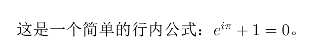
说明:
$...$是\(...\)的简写，行内公式不单独占行，行距会自动撑开。希腊字母用反斜杠命令：
\pi。上标用^，多字符上标必须加大括号（e^{i\pi}不能写成e^i\pi）。
实验题：公式 2（中级）行间公式
题目：插入二次方程求根公式，要求公式单独成行显示。提示使用 \[ ... \] 或 $$ ... $$。
答案:
下面是二次方程求根公式：
\[
\frac{-b \pm \sqrt{b^2 - 4ac}}{2a}
\]
编译结果:
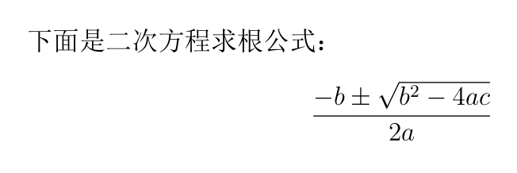
说明:
题目只要求排版求根公式本身，所以不要把
x =也写进去。\[ ... \]是equation*的简写，公式独占一行且不编号；要编号就用equation环境。\frac{分子}{分母}生成分式，\sqrt{...}生成根号，\pm是正负号。不要用
$$ ... $$。它在 LaTeX 里属于 plain TeX 语法，在amsmath下会产生The \hbox is broken一类的低级错误，而且fleqn等选项对它无效。统一用\[ ... \]。
实验题：公式 3（高级）复杂公式的多行排列
题目：使用 align 环境排列下列公式:
a + b = c
x = y/z + √w
答案:
使用 \texttt{align} 环境排列多行公式：
\begin{align}
a + b &= c \\
x &= \frac{y}{z} + \sqrt{w}
\end{align}
编译结果:
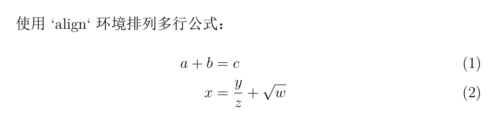
说明:
align环境里用&标记对齐点、\\换行。对齐点必须每行都写，否则对齐会错乱。这里两行都在等号左侧对齐，所以写成
a + b &= c，&放在=前面。align会给每行编号；不需要编号时用align*，或对某一行用\nonumber。
实验题：公式 4（选做）复杂公式综合
题目：排版一个包含希腊字母、角标、微分方程和矩阵运算的复杂公式。要求:
微分方程部分使用上下标，如
\frac{d^2y}{dx^2} = f(x)；矩阵运算部分表示矩阵乘法与转置，如
\mathbf{A}\mathbf{x} = \mathbf{b}；综合符号：结合希腊字母、矩阵求导与积分符号，表示一个矩阵微分方程。
答案:
这里是一个复杂的微分方程和矩阵运算公式：
\[
\frac{d^2 \mathbf{y}(t)}{dt^2} + \alpha \mathbf{A} \mathbf{y}(t) = \beta \mathbf{b},
\quad \text{where} \quad
\mathbf{A} = \begin{pmatrix} a_{11} & a_{12} \\ a_{21} & a_{22} \end{pmatrix},
\quad \mathbf{y}(t) = \begin{pmatrix} y_1(t) \\ y_2(t) \end{pmatrix}
\]
编译结果:
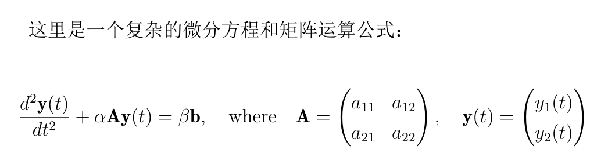
说明:
粗体向量/矩阵用
\mathbf{}（直立粗体）。想用斜体粗体可以加载bm宏包写\bm{A}。矩阵用
pmatrix环境（带圆括号），元素之间用&分列、\\分行。类似的还有bmatrix（方括号）、vmatrix（竖线）、matrix（无括号）。多字母下标要加大括号：
a_{11}、y_1(t)。写成a_11会变成a₁1。希腊字母：
\alpha、\beta、\pi、\theta；大写形式首字母大写（\Gamma、\Delta），但\Alpha、\Beta不存在——大写希腊字母与拉丁字母同形，直接写A、B。\quad是一个汉字宽度的空白（\qquad是两倍），\text{...}里的内容是正体文本。
实验题：表格 1（初级）2×2 简单表格
题目：创建一个 2×2 的表格，内容为 A/B 和 C/D，表格要有边框。提示使用 tabular 环境并确保有 |。
答案:
\begin{table}[h!]
\centering
\begin{tabular}{|c|c|}
\hline
A & B \\
\hline
C & D \\
\hline
\end{tabular}
\caption{简单的2x2表格}
\end{table}
编译结果:
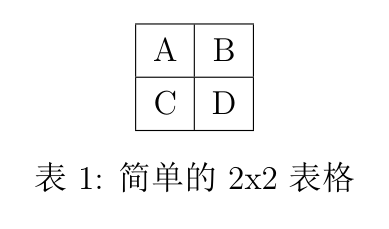
说明:
{|c|c|}中每个c是一列（居中对齐），|是竖线；\hline是横线。列与列之间用
&分隔，行尾用\\。最后一行也必须写\\，否则会报Misplaced \noalign错误——新手最常踩的坑。table是浮动体环境，[h!]是位置参数（here，尽量放在当前位置）；\caption生成表题。表格主体（
tabular）负责排内容，table负责浮动、编号和标题，两者不要混为一谈。
实验题：表格 2（中级）带标题行和对齐设置的表格
题目：创建 3×3 表格，表头为「编号 / 姓名 / 成绩」，数据为 1 张三 85、2 李四 90、3 王五 95。要求姓名列左对齐、成绩列右对齐。
答案:
\begin{table}[h!]
\centering
\begin{tabular}{|c|l|r|}
\hline
编号 & 姓名 & 成绩 \\
\hline
1 & 张三 & 85 \\
2 & 李四 & 90 \\
3 & 王五 & 95 \\
\hline
\end{tabular}
\caption{带对齐设置的表格}
\end{table}
编译结果:
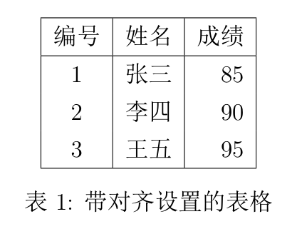
说明:
列格式符：
l左对齐、c居中、r右对齐、p{宽度}指定宽度的左对齐段落列。数字列用
r右对齐，位数不同时也能按位对齐，这是排版数字的惯例。只在表头下画一条横线，数据行之间不加
\hline（完整横线只在表尾）。每行都加\hline会变成全网格表，学术论文里并不好看。想画标准三线表就加载
booktabs:\usepackage{booktabs} % 用 \toprule / \midrule / \bottomrule 替代 \hline
booktabs的规则是：不要与竖线同用，行距也会自动调得更舒展。
实验题：表格 3（高级）复杂表格与单元格合并
题目：创建一个包含合并行与列操作的复杂表格。
要求：第一行 Header 2 合并第二、三列；第二行 Merge Across Columns 合并第二、三列；第四行 Merge Down Rows 合并两行的第一列。
答案:
\begin{table}[h!]
\centering
\begin{tabular}{|c|c|c|}
\hline
Header 1 & \multicolumn{2}{|c|}{Header 2} \\ % 合并 Header 2
\hline
Row 1 & \multicolumn{2}{|c|}{Merge Across Columns} \\ % 合并第二行
\hline
Row 2 & Data A & Data B \\ % 普通数据行
\hline
\multirow{2}{*}{Merge Down Rows} & Data C & Data D \\ % 合并行操作
\cline{2-3}
& Data E & Data F \\ % 第二部分数据行
\hline
\end{tabular}
\caption{复杂表格与单元格合并}
\end{table}
编译结果:
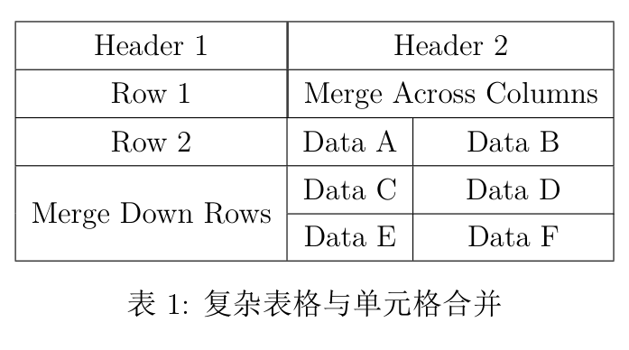
说明:
合并列 用
\multicolumn{列数}{格式}{内容}。注意格式参数要自己补上竖线，比如{c|}，否则合并后会丢边框——本题最容易出错的地方。合并行 用
\multirow{行数}{宽度}{内容}，宽度写*表示按内容自适应。合并
n行后，接下来 n−1 行对应的那一格要空着（写成& Data E & Data F，第一个&前留空）。合并行内部的横线要用
\cline{2-3}指定范围，不能用\hline，否则会把合并的那一格从中间切断。需要更精确的垂直位置可以加位移参数：
\multirow{2}{*}[-0.5ex]{...}。
实验题：表格 4（选做）复杂嵌套表格与列宽控制
题目：创建 7 行 4 列的复杂表格，要求:
第一行标题行跨四列且居中；
第二行第一列内容合并两行且文字居左；
第三行第二列与第三列合并；
第五行第四列嵌套一个 2×2 小表格（N1/N2/N3/N4）；
所有列宽调整，第二列和第三列占总宽度的 50%。
答案:
\begin{table}[h!]
\centering
\begin{tabular}{|p{2cm}|p{3cm}|p{3cm}|p{4cm}|} % 设置列宽
\hline
\multicolumn{4}{|c|}{Complex Table Title} \\ % 跨四列的标题行
\hline
\multirow{2}{*}{Row 1} & Cell 1 & Cell 2 & Cell 3 \\ % 第一列跨两行
\cline{2-4}
& \multicolumn{2}{|c|}{Merge Across 2 Columns} & Cell 3 \\ % 合并第二、三列
\hline
Row 2 & Cell 4 & Cell 5 & Cell 6 \\
\hline
Row 3 & Cell 7 & Cell 8 & \begin{tabular}{|c|c|} % 嵌套表格
\hline
N1 & N2 \\
\hline
N3 & N4 \\
\hline
\end{tabular} \\
\hline
\end{tabular}
\caption{复杂嵌套表格与列宽控制}
\end{table}
编译结果:
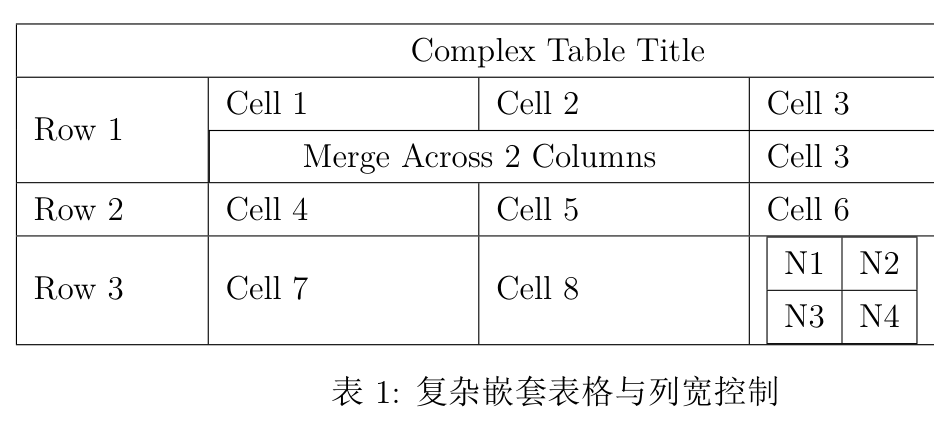
说明:
列格式
{|p{2cm}|p{3cm}|p{3cm}|p{4cm}|}总宽 12cm，其中第二、三列合计 6cm，正好 50%，满足题目第 5 条。想改成相对宽度可以用p{0.15\textwidth}这类写法。嵌套表格就是在单元格里再写一个完整的
tabular环境。嵌套表格自身不要再写\caption，否则编号会乱。p{宽度}是定宽段落列，可以自动换行；l/c/r列不会换行，内容长了会把表格撑破。「第一列合并两行且文字居左」用
\multirow{2}{*}{Row 1}实现——因为第一列本身就是p{2cm}段落列，默认就是左对齐，不需要额外加\raggedright。单元格里嵌套表格后垂直位置可能偏高或偏低，可以用
\begin{tabular}[b]{...}或\raisebox微调。
实验题：图片 1（初级）基本图片插入
题目：插入一张图片并添加标题。使用占位符图片 example-image-a，提示使用 graphicx 宏包、\includegraphics 和 \caption。
答案:
\begin{figure}[h!]
\centering
\includegraphics[width=0.5\textwidth]{example-image-a} % 插入图片
\caption{示例图片}
\end{figure}
编译结果:
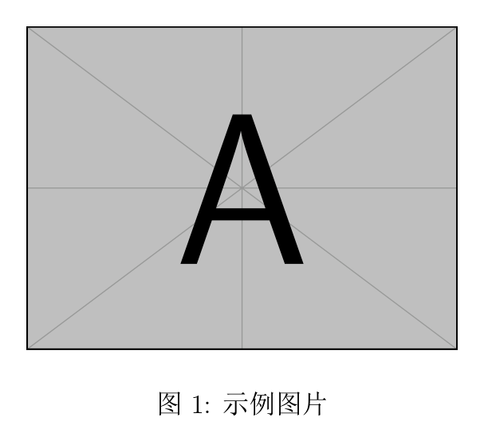
说明:
example-image-a来自mwe宏包（TeX Live 中默认安装），不需要准备真实图片就能编译，非常适合做作业和测试排版。宽度取
0.5\textwidth（版心的一半）。\includegraphics[选项]{文件名}中不要写扩展名，LaTeX 会自己找.pdf/.png/.jpg。常用选项：
width=、height=、scale=、angle=。只指定width或height其中一个，同时指定两个会拉伸变形。\centering在figure环境里让图片居中；位置不理想时可以用[htbp]，或加\usepackage{float}后用[H]强制固定。
实验题：图片 2（中级）调整图片大小与位置
题目：插入图片，将其大小调整为文档宽度的 60%，并让图片居右显示。提示使用 width 参数和 \raggedleft。
答案:
\begin{figure}[h!]
\raggedleft
\includegraphics[width=0.6\textwidth]{example-image-a} % 插入图片并调整大小
\caption{调整大小与位置的图片}
\end{figure}
编译结果:
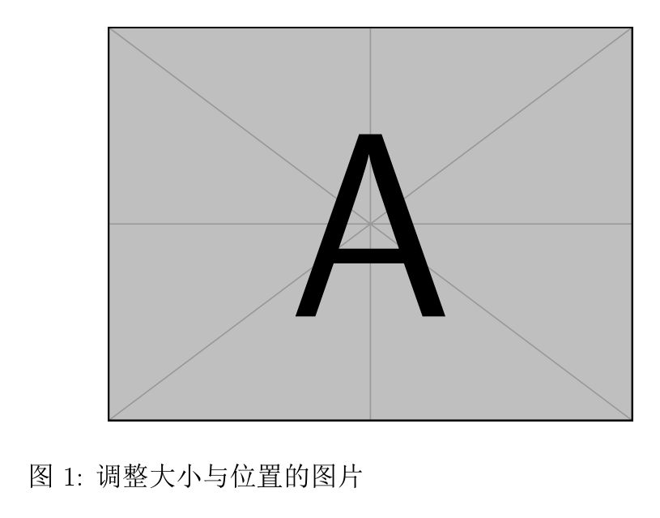
说明:
0.6\textwidth表示版心宽度的 60%。用相对宽度而不是绝对长度（如6cm），换模板、换纸张大小时不会崩。对齐命令三兄弟：
\centering居中、\raggedright左对齐、\raggedleft右对齐，作用范围到环境结束为止。注意顺序：
\raggedleft要写在\includegraphics之前，写在后面无效。此时图片和\caption会一起被推到右边（图题也跟着靠右）。
实验题：图片 3（高级）多张图片并排显示
题目：插入两张图片并排显示，每张占文档宽度的 40%，且每张图片有独立标题。提示使用 minipage 环境。
答案:
\begin{figure}[h!]
\centering
\begin{minipage}[b]{0.4\textwidth}
\includegraphics[width=\textwidth]{example-image-a} % 插入左侧图片
\caption{左侧图片}
\end{minipage}
\begin{minipage}[b]{0.4\textwidth}
\includegraphics[width=\textwidth]{example-image-b} % 插入右侧图片
\caption{右侧图片}
\end{minipage}
\end{figure}
编译结果:
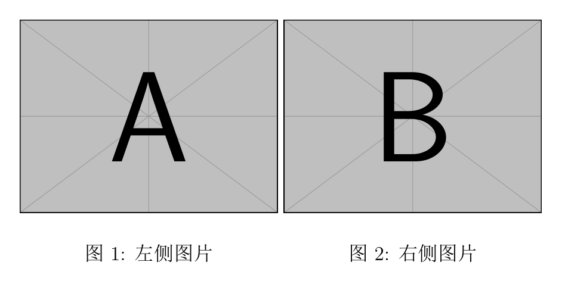
说明:
每格取
0.4\textwidth（不是 0.5 + 0.5）——留出空隙，两张图不会贴在一起，两侧还有余量。两个
minipage之间不能有空行，否则会插入段落分隔，导致第二个跑到下一行。这是并排排版失败最常见的原因。minipage里的\textwidth指的是 minipage 自己的宽度，不是整个版心，所以width=\textwidth正好填满一格。[b]表示按底部对齐（[t]顶部、[c]居中），两张图高矮不一时用它对齐基线。每个
minipage内直接用\caption，两张子图拿到的是「图 1」「图 2」两个独立编号。生产环境建议加载subcaption宏包，用subfigure得到规范的 (a)(b) 子图编号。
实验题：图片 4（选做）图片与文字混排
题目：在文档中插入一张图片，图片占文档右侧 40%，左侧 60% 放置一段文字描述，要求图文并排显示。
答案:
\begin{figure}[h!]
\centering
\begin{minipage}[b]{0.6\textwidth}
这是一段文字描述，它占据文档的 60\% 宽度。图片放在文字的右侧，确保它们并排显示。
\end{minipage}
\begin{minipage}[b]{0.4\textwidth}
\includegraphics[width=\textwidth]{example-image-a} % 插入图片
\caption{右侧图片}
\end{minipage}
\end{figure}
编译结果:
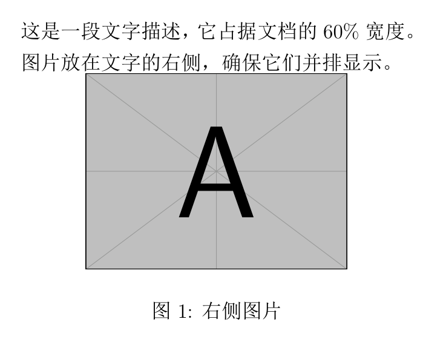
说明:
思路和上一题一样，只是把一格换成文字。图文并排的本质就是把两块内容各自装进
minipage。文字里要输出百分号必须转义：
60\%，直接写%会把后面整行注释掉。文字比图片长很多时，
minipage高度不匹配会很难看，建议把短的一侧用[c]居中，或干脆把文字写在图片下方。
小结
| 考点 | 核心命令 | 最常踩的坑 |
|---|---|---|
| 行内公式 | $...$ |
多字符上下标没加 {} |
| 行间公式 | \[ ... \] |
用了过时的 $$ ... $$ |
| 多行公式 | align + & + \\ |
漏写对齐符 |
| 矩阵 | pmatrix / bmatrix |
用 a_11 代替 a_{11} |
| 表格 | tabular + & + \\ |
最后一行漏 \\ |
| 合并列 | \multicolumn{n}{c|}{...} |
格式参数漏写竖线 |
| 合并行 | \multirow{n}{*}{...} |
后续行没留空格子 |
| 插图 | \includegraphics[width=...] |
文件名带扩展名 |
| 并排排版 | minipage |
两个 minipage 之间留了空行 |
| 百分号 | \% |
直接写 % 把整行注释掉 |